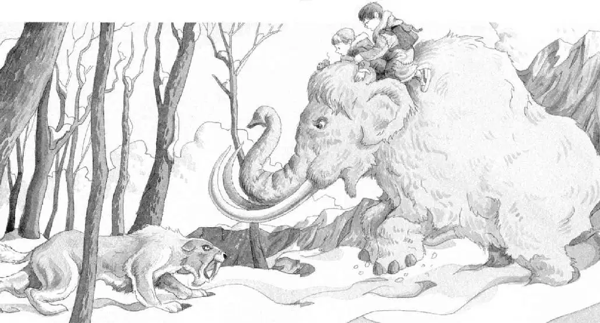

The huge mammoth walked across the open plain.
“Look!” said Annie. She pointed to a herd of elk in the distance. They had great, wide antlers.
“There!” said Jack as a herd of reindeer came into view. They pranced gracefully across the snow.
Then a woolly rhino joined them on the open plain. Then a bison!
The elk, reindeer, rhino, and bison moved along with them, at a distance.
They seemed to be escorting Jack and Annie back to the tree house.
The snow sparkled with sunlight.
This is a great parade, Jack thought. Fantastic.
They were getting closer and closer to the grove of tall trees.
“I told you,” said Annie. “Lulu’s taking us home.”
But just then the mammoth let out a cry. All the other animals bounded off.
Peanut started to squeak.
Jack looked around.
Behind them the sabertooth was slinking across the sunlit snow!
The woolly mammoth roared and plunged forward.
Jack and Annie nearly fell off.
Jack clutched Annie. She and Peanut clutched the mammoth’s shaggy hair.
The mammoth thundered wildly over the ground.
“Ahhh!” Jack and Annie yelled.
The mammoth charged to the grove of trees.
But the tiger had circled around the trees. He stood between the tallest tree and the mammoth.
They were trapped.
The sabertooth began moving slowly toward the mammoth.
The woolly mammoth roared fiercely.
But Jack knew a sabertooth could kill any creature, including a mammoth.
The huge tiger’s head was down. His burning eyes were fixed on the mammoth. His long white fangs glinted in the sunlight.
